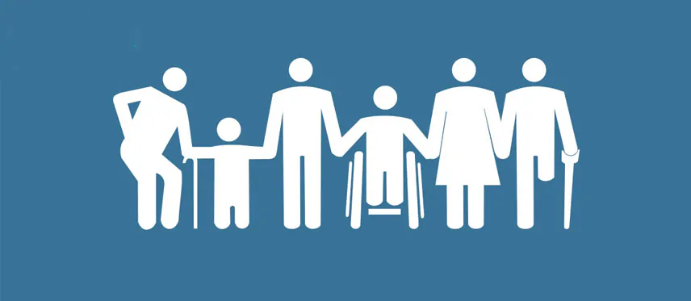

bpc-loas
O BPC (Benefício de Prestação Continuada) é um benefício assistencial previsto na Lei Orgânica da Assistência Social (LOAS) que tem como objetivo garantir um mínimo de dignidade aos cidadãos que se encontrem em situação de vulnerabilidade social.
Esse benefício é destinado a pessoas com deficiência e idosos que não possuem meios de prover a própria manutenção e que não recebem outro tipo de benefício, como aposentadoria ou pensão.
Quem tem direito ao BPC?
o bpc/loas se divide em duas categorias:
o benefício assistencial para pessoa com deficiência(PcD), para idosos acima de 65 anos que não tem renda